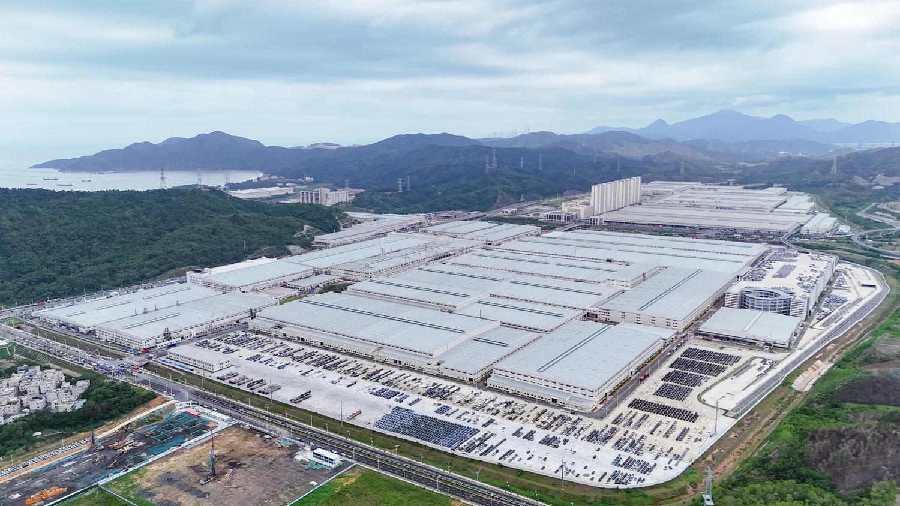
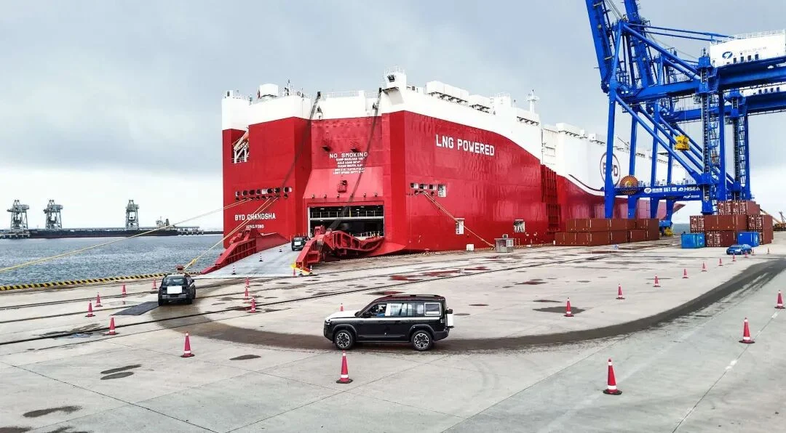

产业与创新 / 汽车出海
从工厂到港口，
深圳新车怎样出海？
在深汕，新车下线后，最快5分钟就能驶入小漠港。工厂与港口靠近，让我们看见深圳汽车连接海外市场的一条路径。

工厂造车新车进港装船出海
在工厂，完成汽车生产
深汕是深圳市深汕特别合作区的简称，也是比亚迪在国内的制造基地之一。这里的项目既包括整车生产，也涉及电池等关键零部件。
出厂后，新车直接开往港口
工厂靠近小漠港。按原文介绍，新车下线后可直接开往港口，最快5分钟到达。
5分钟仅指工厂到港口这一段，不是完成出口或运到海外所需的时间。
装上船，驶向海外市场
截至原文发布，小漠港累计开通13条汽车外贸航线。2026年9月21日，“长沙号”从这里驶往阿联酋，运载6154辆国产新能源汽车。

本文文字与图片来源于同一篇报道前港后厂 港产联动！“深圳造”新能源汽车驶向全球 ↗
深汕发布 · 深汕特别合作区官网 · 2026-10-20
原文图片未列单独摄影署名；此处图注为编辑说明。
信息截至原文发布日期，流程示意由立方匯整理。